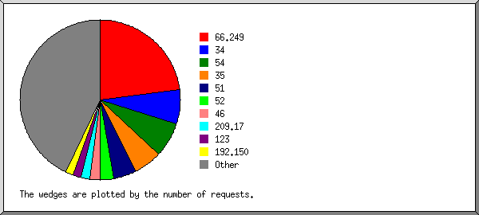
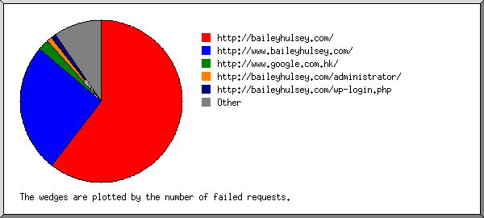
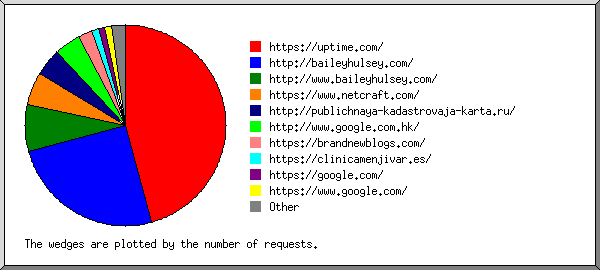
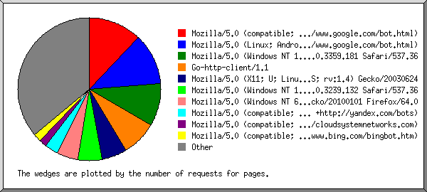
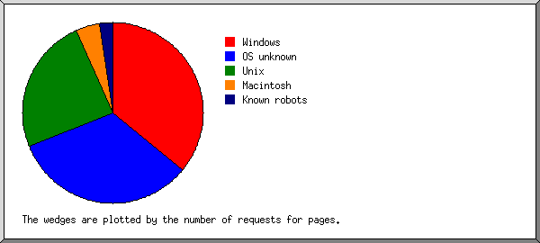
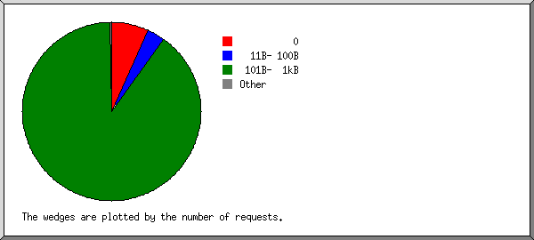
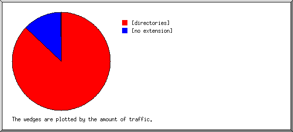

Web Server Statistics for baileyhulsey.com
Web Server Statistics for baileyhulsey.com
Program started on Mon, Sep 30 2019 at 7:02 AM.
Analyzed requests from Thu, May 23 2019 at 12:35 PM to Mon, Sep 30 2019 at 3:55 AM (129.64 days).
Web Server Statistics for baileyhulsey.comProgram started on Mon, Sep 30 2019 at 7:02 AM.
Analyzed requests from Thu, May 23 2019 at 12:35 PM to Mon, Sep 30 2019 at 3:55 AM (129.64 days).
(Go To: Top | General Summary | Monthly Report | Daily Summary | Hourly Summary | Domain Report | Organization Report | Failed Referrer Report | Referring Site Report | Browser Report | Browser Summary | Operating System Report | Status Code Report | File Size Report | File Type Report | Directory Report | Request Report)
Figures in parentheses refer to the 7-day period ending Sep 30 2019 at 7:02 AM.
Successful requests: 1,256 (47)
Average successful requests per day: 9 (6)
Successful requests for pages: 1,246 (47)
Average successful requests for pages per day: 9 (6)
Failed requests: 2,218 (4)
Distinct files requested: 17 (2)
Distinct hosts served: 652 (7)
Data transferred: 572.33 kilobytes (20.96 kilobytes)
Average data transferred per day: 4.41 kilobytes (2.99 kilobytes)
(Go To: Top | General Summary | Monthly Report | Daily Summary | Hourly Summary | Domain Report | Organization Report | Failed Referrer Report | Referring Site Report | Browser Report | Browser Summary | Operating System Report | Status Code Report | File Size Report | File Type Report | Directory Report | Request Report)
Each unit ( ) represents 10 requests for pages or part thereof.
) represents 10 requests for pages or part thereof.
| month | #reqs | #pages | |
|---|---|---|---|
| May 2019 | 115 | 110 |   |
| Jun 2019 | 343 | 343 |  |
| Jul 2019 | 288 | 288 |   |
| Aug 2019 | 263 | 258 | |
| Sep 2019 | 247 | 247 | |
Busiest month: Jun 2019 (343 requests for pages).
(Go To: Top | General Summary | Monthly Report | Daily Summary | Hourly Summary | Domain Report | Organization Report | Failed Referrer Report | Referring Site Report | Browser Report | Browser Summary | Operating System Report | Status Code Report | File Size Report | File Type Report | Directory Report | Request Report)
Each unit () represents 5 requests for pages or part thereof.
| day | #reqs | #pages | |
|---|---|---|---|
| Sun | 180 | 179 | |
| Mon | 178 | 173 | |
| Tue | 206 | 206 | |
| Wed | 145 | 145 | |
| Thu | 162 | 158 | |
| Fri | 200 | 200 | |
| Sat | 185 | 185 | |
(Go To: Top | General Summary | Monthly Report | Daily Summary | Hourly Summary | Domain Report | Organization Report | Failed Referrer Report | Referring Site Report | Browser Report | Browser Summary | Operating System Report | Status Code Report | File Size Report | File Type Report | Directory Report | Request Report)
Each unit () represents 3 requests for pages or part thereof.
| hour | #reqs | #pages | |
|---|---|---|---|
| 0 | 45 | 45 | |
| 1 | 40 | 40 | |
| 2 | 41 | 41 | |
| 3 | 38 | 38 | |
| 4 | 58 | 58 | |
| 5 | 50 | 50 | |
| 6 | 34 | 34 | |
| 7 | 43 | 38 | |
| 8 | 73 | 73 | |
| 9 | 60 | 60 | |
| 10 | 68 | 68 | |
| 11 | 90 | 90 | |
| 12 | 73 | 70 | |
| 13 | 90 | 90 | |
| 14 | 39 | 39 | |
| 15 | 64 | 64 | |
| 16 | 35 | 35 | |
| 17 | 50 | 48 | |
| 18 | 49 | 49 | |
| 19 | 43 | 43 | |
| 20 | 38 | 38 | |
| 21 | 39 | 39 | |
| 22 | 51 | 51 | |
| 23 | 45 | 45 | |
(Go To: Top | General Summary | Monthly Report | Daily Summary | Hourly Summary | Domain Report | Organization Report | Failed Referrer Report | Referring Site Report | Browser Report | Browser Summary | Operating System Report | Status Code Report | File Size Report | File Type Report | Directory Report | Request Report)
Listing domains, sorted by the amount of traffic.
| #reqs | %bytes | domain |
|---|---|---|
| 1256 | 100% | [unresolved numerical addresses] |
(Go To: Top | General Summary | Monthly Report | Daily Summary | Hourly Summary | Domain Report | Organization Report | Failed Referrer Report | Referring Site Report | Browser Report | Browser Summary | Operating System Report | Status Code Report | File Size Report | File Type Report | Directory Report | Request Report)

Listing the top 20 organizations by the number of requests, sorted by the number of requests.
| #reqs | %bytes | organization |
|---|---|---|
| 343 | 24.90% | 66.249 |
| 91 | 6.53% | 54 |
| 90 | 6.56% | 34 |
| 82 | 3.82% | 35 |
| 56 | 3.91% | 51 |
| 47 | 1.97% | 46 |
| 39 | 2.78% | 52 |
| 24 | 1.95% | 209.17 |
| 22 | 1.31% | 178.154 |
| 20 | 1.35% | 18 |
| 18 | 0.13% | 109 |
| 17 | 12.34% | 192.150 |
| 14 | 1.11% | 141.8 |
| 13 | 0.95% | 167.114 |
| 13 | 0.78% | 3 |
| 13 | 0.88% | 77 |
| 13 | 0.69% | 104 |
| 13 | 0.47% | 40 |
| 12 | 6.32% | 98 |
| 11 | 0.91% | 60 |
| 305 | 20.35% | [not listed: 133 organizations] |
(Go To: Top | General Summary | Monthly Report | Daily Summary | Hourly Summary | Domain Report | Organization Report | Failed Referrer Report | Referring Site Report | Browser Report | Browser Summary | Operating System Report | Status Code Report | File Size Report | File Type Report | Directory Report | Request Report)

Listing referring URLs, sorted by the number of failed requests.
(Go To: Top | General Summary | Monthly Report | Daily Summary | Hourly Summary | Domain Report | Organization Report | Failed Referrer Report | Referring Site Report | Browser Report | Browser Summary | Operating System Report | Status Code Report | File Size Report | File Type Report | Directory Report | Request Report)

Listing referring sites, sorted by the number of requests.
| #reqs | site |
|---|---|
| 42 | https://uptime.com/ |
| 10 | http://baileyhulsey.com/ |
| 4 | http://publichnaya-kadastrovaja-karta.ru/ |
| 2 | https://brandnewblogs.com/ |
| 2 | http://www.google.com.hk/ |
| 1 | http://www.baileyhulsey.com/ |
| 1 | https://www.google.com/ |
| 1 | http://pizza-tycoon.com/ |
(Go To: Top | General Summary | Monthly Report | Daily Summary | Hourly Summary | Domain Report | Organization Report | Failed Referrer Report | Referring Site Report | Browser Report | Browser Summary | Operating System Report | Status Code Report | File Size Report | File Type Report | Directory Report | Request Report)

Listing the top 40 browsers by the number of requests for pages, sorted by the number of requests for pages.
| #reqs | #pages | browser |
|---|---|---|
| 200 | 200 | Mozilla/5.0 (compatible; Googlebot/2.1; +http://www.google.com/bot.html) |
| 144 | 144 | Mozilla/5.0 (Linux; Android 6.0.1; Nexus 5X Build/MMB29P) AppleWebKit/537.36 (KHTML, like Gecko) Chrome/41.0.2272.96 Mobile Safari/537.36 (compatible; Googlebot/2.1; +http://www.google.com/bot.html) |
| 116 | 116 | Mozilla/5.0 (Windows NT 10.0; Win64; x64)AppleWebKit/537.36 (KHTML, like Gecko) Chrome/66.0.3359.181 Safari/537.36 |
| 110 | 110 | Go-http-client/1.1 |
| 72 | 72 | Mozilla/5.0 (X11; U; Linux i686; en-US; rv:1.4) Gecko/20030624 |
| 59 | 59 | Mozilla/5.0 (Windows NT 6.1; Win64; x64; rv:64.0) Gecko/20100101 Firefox/64.0 |
| 42 | 42 | Mozilla/5.0 (compatible; Uptimebot/1.0; +http://www.uptime.com/uptimebot) |
| 42 | 42 | Mozilla/5.0 (compatible; YandexBot/3.0; +http://yandex.com/bots) |
| 31 | 31 | Mozilla/5.0 (Windows NT 10.0; Win64; x64) AppleWebKit/537.36 (KHTML, like Gecko) Chrome/63.0.3239.132 Safari/537.36 |
| 28 | 28 | Mozilla/5.0 (compatible; bingbot/2.0; +http://www.bing.com/bingbot.htm) |
| 26 | 26 | Mozilla/5.0 (X11; Linux x86_64) AppleWebKit/537.36 (KHTML, like Gecko) Chrome/67.0.3396.87 Safari/537.36 OPR/54.0.2952.60 |
| 24 | 24 | Mozilla/5.0 (compatible; Nimbostratus-Bot/v1.3.2; http://cloudsystemnetworks.com) |
| 21 | 21 | Mozilla/5.0 (compatible; AhrefsBot/6.1; +http://ahrefs.com/robot/) |
| 21 | 19 | Mozilla/5.0 (Windows NT 10.0; Win64; x64) AppleWebKit/537.36 (KHTML, like Gecko) Chrome/74.0.3729.169 Safari/537.36 |
| 17 | 17 | Mozilla/5.0 (Windows NT 6.1; WOW64) AppleWebKit/537.36 (KHTML, like Gecko) Chrome/36.0.1985.143 Safari/537.36 |
| 12 | 12 | Mozilla/5.0 (compatible; Dataprovider.com) |
| 11 | 11 | Mozilla/5.0 (Macintosh; Intel Mac OS X 10.11; rv:47.0) Gecko/20100101 Firefox/47.0 |
| 9 | 9 | Mozilla/5.0 (Windows NT 10.0; Win64; x64) AppleWebKit/537.36 (KHTML, like Gecko) Chrome/71.0.3578.98 Safari/537.36 |
| 8 | 8 | CheckMarkNetwork/1.0 (+http://www.checkmarknetwork.com/spider.html) |
| 8 | 8 | Mozilla/5.0 (Macintosh; Intel Mac OS X 10_9_3) AppleWebKit/537.36 (KHTML, like Gecko) Chrome/35.0.1916.47 Safari/537.36 |
| 7 | 7 | Mozilla/5.0 (X11; Linux x86_64) AppleWebKit/537.36 (KHTML, like Gecko) Chrome/75.0.3770.100 Safari/537.36 OPR/62.0.3331.99 |
| 7 | 7 | Mozilla/5.0 (Macintosh; Intel Mac OS X 10_8_3) AppleWebKit/537.31 (KHTML, like Gecko) Chrome/26.0.1410.65 Safari/537.31 |
| 6 | 6 | Mozilla/5.0 (X11; Ubuntu; Linux x86_64; rv:58.0) Gecko/20100101 Firefox/58.0 |
| 6 | 6 | Mozilla/5.0 (Windows NT 10.0; Win64; x64) AppleWebKit/537.36 (KHTML, like Gecko) Chrome/61.0.3163.100 Safari/537.36 |
| 6 | 6 | Mozilla/5.0 (Macintosh; Intel Mac OS X 10.10; rv:59.0) Gecko/20100101 Firefox/59.0 |
| 5 | 5 | Mozilla/5.0 (Windows NT 10.0) AppleWebKit/537.36 (KHTML, like Gecko) Chrome/66.0.3359.181 Safari/537.36 |
| 6 | 5 | Mozilla/5.0 (Macintosh; Intel Mac OS X 10_14_5) AppleWebKit/537.36 (KHTML, like Gecko) Chrome/74.0.3729.169 Safari/537.36 |
| 5 | 5 | Mozilla/5.0 (X11; Ubuntu; Linux x86_64; rv:62.0) Gecko/20100101 Firefox/62.0 |
| 5 | 5 | python-requests/2.22.0 |
| 5 | 5 | Mozilla/5.0 (Windows NT 6.1; WOW64; rv:64.0) Gecko/20100101 Firefox/64.0 |
| 4 | 4 | Mozilla/5.0 (Windows NT 10.0; Win64; x64) AppleWebKit/537.36 (KHTML, like Gecko) Chrome/72.0.3626.121 Safari/537.36 |
| 4 | 4 | Mozilla/5.0 (Linux; Android 5.1.1; SM-G925F Build/LMY47X) AppleWebKit/537.36 (KHTML, like Gecko) Chrome/45.0.2454.94 Mobile Safari/537.36 |
| 4 | 4 | Mozilla/5.0 (compatible; NetcraftSurveyAgent/1.0; +info@netcraft.com) |
| 4 | 4 | Mozilla/5.0 (Macintosh; Intel Mac OS X 10.10; rv:65.0) Gecko/20100101 Firefox/65.0 |
| 4 | 4 | Mozilla/5.0 (Windows NT 6.1; WOW64) AppleWebKit/537.1 (KHTML, like Gecko) Chrome/22.0.1207.1 Safari/537.1 |
| 4 | 4 | Scrapy/1.5.1 (+https://scrapy.org) |
| 3 | 3 | Mozilla/5.0 (Macintosh; Intel Mac OS X 10_12_5) AppleWebKit/537.36 (KHTML, like Gecko) Chrome/58.0.3029.110 Safari/537.36 |
| 3 | 3 | facebookexternalhit/1.1 (compatible;) |
| 3 | 3 | Mozilla/5.0 (Windows NT 6.1; WOW64) AppleWebKit/537.36 (KHTML, like Gecko) Chrome/34.0.1847.131 Safari/537.36 |
| 3 | 3 | Mozilla/5.0 (Windows NT 10.0; Win64; x64; rv:50.0) Gecko/20100101 Firefox/50.0 |
| 144 | 137 | [not listed: 102 browsers] |
(Go To: Top | General Summary | Monthly Report | Daily Summary | Hourly Summary | Domain Report | Organization Report | Failed Referrer Report | Referring Site Report | Browser Report | Browser Summary | Operating System Report | Status Code Report | File Size Report | File Type Report | Directory Report | Request Report)

Listing browsers with at least 1 request for a page, sorted by the number of requests for pages.
| # | #reqs | #pages | browser |
|---|---|---|---|
| 1 | 492 | 489 | Safari |
| 488 | 485 | Safari/537 | |
| 2 | 2 | Safari/533 | |
| 1 | 1 | Safari/6533 | |
| 1 | 1 | Safari/605 | |
| 2 | 389 | 382 | Netscape (compatible) |
| 3 | 132 | 132 | Firefox |
| 66 | 66 | Firefox/64 | |
| 11 | 11 | Firefox/47 | |
| 9 | 9 | Firefox/3 | |
| 7 | 7 | Firefox/58 | |
| 6 | 6 | Firefox/65 | |
| 6 | 6 | Firefox/59 | |
| 5 | 5 | Firefox/62 | |
| 3 | 3 | Firefox/50 | |
| 3 | 3 | Firefox/66 | |
| 3 | 3 | Firefox/68 | |
| 4 | 110 | 110 | Go-http-client |
| 110 | 110 | Go-http-client/1 | |
| 5 | 77 | 77 | Mozilla |
| 74 | 74 | Mozilla/1 | |
| 6 | 8 | 8 | CheckMarkNetwork |
| 8 | 8 | CheckMarkNetwork/1 | |
| 7 | 7 | 7 | python-requests |
| 7 | 7 | python-requests/2 | |
| 8 | 7 | 7 | MSIE |
| 3 | 3 | MSIE/8 | |
| 2 | 2 | MSIE/7 | |
| 1 | 1 | MSIE/9 | |
| 1 | 1 | MSIE/10 | |
| 9 | 4 | 4 | Scrapy |
| 4 | 4 | Scrapy/1 | |
| 10 | 3 | 3 | facebookexternalhit |
| 3 | 3 | facebookexternalhit/1 | |
| 11 | 2 | 2 | Pandalytics |
| 2 | 2 | Pandalytics/1 | |
| 12 | 1 | 1 | Python |
| 1 | 1 | Python/3 | |
| 13 | 1 | 1 | 8LEGS |
| 14 | 1 | 1 | crawler4j (https: |
| 1 | 1 | crawler4j (https://github | |
| 15 | 1 | 1 | CipaCrawler |
| 1 | 1 | CipaCrawler/3 | |
| 16 | 1 | 1 | EIG-InSites Bot https: |
| 1 | 1 | EIG-InSites Bot https://insites-ui-prod-dot-eig-insites | |
| 17 | 1 | 1 | curl |
| 1 | 1 | curl/7 | |
| 18 | 1 | 1 | Opera |
| 1 | 1 | Opera/9 | |
| 19 | 1 | 1 | CATExplorador |
| 1 | 1 | CATExplorador/1 |
(Go To: Top | General Summary | Monthly Report | Daily Summary | Hourly Summary | Domain Report | Organization Report | Failed Referrer Report | Referring Site Report | Browser Report | Browser Summary | Operating System Report | Status Code Report | File Size Report | File Type Report | Directory Report | Request Report)

Listing operating systems, sorted by the number of requests for pages.
| # | #reqs | #pages | OS |
|---|---|---|---|
| 1 | 499 | 492 | OS unknown |
| 2 | 370 | 368 | Windows |
| 229 | 227 | Windows NT | |
| 126 | 126 | Unknown Windows | |
| 14 | 14 | Windows XP | |
| 1 | 1 | Windows Server 2003 | |
| 3 | 285 | 285 | Unix |
| 285 | 285 | Linux | |
| 4 | 53 | 52 | Macintosh |
| 5 | 32 | 32 | Known robots |
(Go To: Top | General Summary | Monthly Report | Daily Summary | Hourly Summary | Domain Report | Organization Report | Failed Referrer Report | Referring Site Report | Browser Report | Browser Summary | Operating System Report | Status Code Report | File Size Report | File Type Report | Directory Report | Request Report)

Listing status codes, sorted numerically.
| #reqs | status code |
|---|---|
| 1122 | 200 OK |
| 74 | 206 Partial content |
| 60 | 304 Not modified since last retrieval |
| 2218 | 404 Document not found |
(Go To: Top | General Summary | Monthly Report | Daily Summary | Hourly Summary | Domain Report | Organization Report | Failed Referrer Report | Referring Site Report | Browser Report | Browser Summary | Operating System Report | Status Code Report | File Size Report | File Type Report | Directory Report | Request Report)

| size | #reqs | %bytes |
|---|---|---|
| 0 | 112 | |
| 1B- 10B | 0 | |
| 11B- 100B | 41 | 0.67% |
| 101B- 1kB | 1100 | 81.98% |
| 1kB- 10kB | 0 | |
| 10kB-100kB | 3 | 17.36% |
(Go To: Top | General Summary | Monthly Report | Daily Summary | Hourly Summary | Domain Report | Organization Report | Failed Referrer Report | Referring Site Report | Browser Report | Browser Summary | Operating System Report | Status Code Report | File Size Report | File Type Report | Directory Report | Request Report)

Listing extensions with at least 0.1% of the traffic, sorted by the amount of traffic.
| #reqs | %bytes | extension |
|---|---|---|
| 1246 | 82.54% | [directories] |
| 10 | 17.46% | [no extension] |
(Go To: Top | General Summary | Monthly Report | Daily Summary | Hourly Summary | Domain Report | Organization Report | Failed Referrer Report | Referring Site Report | Browser Report | Browser Summary | Operating System Report | Status Code Report | File Size Report | File Type Report | Directory Report | Request Report)

Listing directories with at least 0.01% of the traffic, sorted by the amount of traffic.
| #reqs | %bytes | directory |
|---|---|---|
| 1249 | 99.90% | [root directory] |
| 7 | 0.10% | /.well-known/ |
(Go To: Top | General Summary | Monthly Report | Daily Summary | Hourly Summary | Domain Report | Organization Report | Failed Referrer Report | Referring Site Report | Browser Report | Browser Summary | Operating System Report | Status Code Report | File Size Report | File Type Report | Directory Report | Request Report)

Listing files with at least 20 requests, sorted by the number of requests.
| #reqs | %bytes | last time | file |
|---|---|---|---|
| 1246 | 82.54% | Sep/30/19 3:55 AM | / |
| 35 | 2.48% | Aug/25/19 8:05 AM | /?66.249.64.72 |
| 12 | 1.05% | Sep/21/19 8:49 AM | /?207.46.13.177 |
| 10 | 17.46% | Aug/12/19 7:24 AM | [not listed: 5 files] |